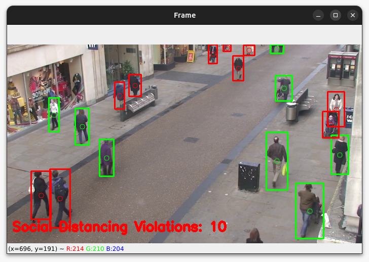
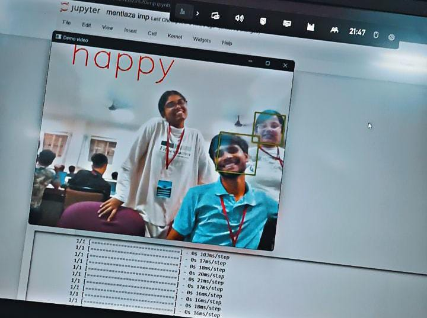

Social Distancing project with Computer Vision and Deep Learning
Aimed to promote social distancing and prevent the spread of COVID-19.
Utilized object detection models (e.g., SSD/Yolo) to detect people in frames.
Trained the model to accurately identify individuals.
Displayed a warning message on-screen if the distance between two people was below the threshold.
The Project took 2 Month to finish by a group of 3 Team Member.
Mentalaza
Made a working prototype of an emotion detecting AI that will help people suffering from Alexithymia.
Improved emotional awareness is encouraged also there is plenty room for improvement.
Open CV, Python, Jupyter notebook, Deepface, matplot are used.
This project helps in identifying the emotions of the person who is being captured on the screen.
The Project took 2 Day to finish by a group of 4 Team Member.
